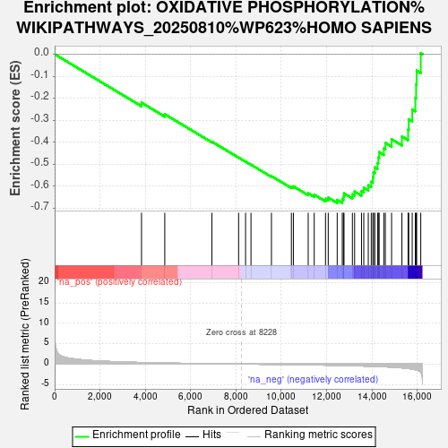
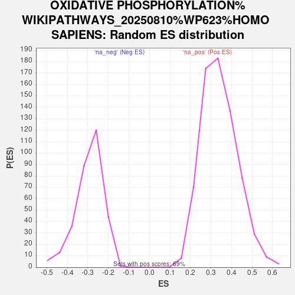

| Dataset | PAL_vs_CTL_ranked |
| Phenotype | NoPhenotypeAvailable |
| Upregulated in class | na_neg |
| GeneSet | OXIDATIVE PHOSPHORYLATION%WIKIPATHWAYS_20250810%WP623%HOMO SAPIENS |
| Enrichment Score (ES) | -0.6767713 |
| Normalized Enrichment Score (NES) | -2.3007436 |
| Nominal p-value | 0.0 |
| FDR q-value | 4.4772343E-4 |
| FWER p-Value | 0.001 |

| SYMBOL | RANK IN GENE LIST | RANK METRIC SCORE | RUNNING ES | CORE ENRICHMENT | |
|---|---|---|---|---|---|
| 1 | NDUFA5 | 3833 | 0.374 | -0.2204 | No |
| 2 | NDUFC2 | 4859 | 0.252 | -0.2728 | No |
| 3 | ATP5MG | 6937 | 0.080 | -0.3976 | No |
| 4 | NDUFS1 | 8117 | 0.005 | -0.4701 | No |
| 5 | NDUFV2 | 8424 | -0.011 | -0.4886 | No |
| 6 | ATP6AP2 | 8663 | -0.025 | -0.5022 | No |
| 7 | ATP5PO | 9566 | -0.083 | -0.5543 | No |
| 8 | NDUFA6 | 10446 | -0.146 | -0.6022 | No |
| 9 | NDUFB8 | 10534 | -0.153 | -0.6009 | No |
| 10 | NDUFA4L2 | 11188 | -0.206 | -0.6323 | No |
| 11 | NDUFS4 | 11453 | -0.227 | -0.6387 | No |
| 12 | NDUFV3 | 11952 | -0.274 | -0.6575 | No |
| 13 | NDUFA9 | 12072 | -0.287 | -0.6524 | No |
| 14 | NDUFB6 | 12468 | -0.333 | -0.6623 | Yes |
| 15 | NDUFB2 | 12692 | -0.360 | -0.6603 | Yes |
| 16 | ATP5ME | 12743 | -0.367 | -0.6474 | Yes |
| 17 | ATP5PB | 12768 | -0.369 | -0.6328 | Yes |
| 18 | NDUFS5 | 13138 | -0.417 | -0.6374 | Yes |
| 19 | ATP5MF | 13236 | -0.432 | -0.6246 | Yes |
| 20 | NDUFA4 | 13540 | -0.479 | -0.6224 | Yes |
| 21 | NDUFB5 | 13641 | -0.493 | -0.6071 | Yes |
| 22 | ATP5F1D | 13839 | -0.530 | -0.5962 | Yes |
| 23 | DMAC2L | 13970 | -0.553 | -0.5801 | Yes |
| 24 | NDUFA10 | 14043 | -0.566 | -0.5599 | Yes |
| 25 | ATP5F1E | 14069 | -0.571 | -0.5365 | Yes |
| 26 | ATP5MC3 | 14128 | -0.585 | -0.5146 | Yes |
| 27 | NDUFA11 | 14248 | -0.610 | -0.4953 | Yes |
| 28 | NDUFA3 | 14283 | -0.618 | -0.4705 | Yes |
| 29 | NDUFS6 | 14319 | -0.625 | -0.4454 | Yes |
| 30 | NDUFS8 | 14525 | -0.669 | -0.4289 | Yes |
| 31 | NDUFB4 | 14592 | -0.687 | -0.4031 | Yes |
| 32 | NDUFB1 | 14867 | -0.763 | -0.3867 | Yes |
| 33 | ATP5MC2 | 15323 | -0.936 | -0.3740 | Yes |
| 34 | NDUFAB1 | 15596 | -1.098 | -0.3430 | Yes |
| 35 | NDUFB7 | 15624 | -1.117 | -0.2959 | Yes |
| 36 | NDUFB9 | 15778 | -1.240 | -0.2513 | Yes |
| 37 | NDUFC1 | 15915 | -1.399 | -0.1987 | Yes |
| 38 | NDUFA2 | 15950 | -1.447 | -0.1377 | Yes |
| 39 | NDUFS3 | 15974 | -1.480 | -0.0746 | Yes |
| 40 | NDUFB10 | 16155 | -2.071 | 0.0046 | Yes |
